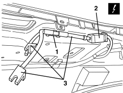

7030H51 HOOD FRONT LOCK CLOSING SENSORS - R.R.
- Path
- Procedures > 70 FITTINGS > 7030 SUN ROOF/GLASS PANEL > 7030H AUTOMATICALLY OPERATED HOOD > 7030H51 HOOD FRONT LOCK CLOSING SENSORS - R.R.
- Kind
- repair procedure (removal / refitting; the operation number is the code)
- Applies to
- engines: 2.2 JTS, 3.2 JTS; all production periods
- Interactive page
- https://sloeber94.github.io/elrnDB-aBrrSpdr/en/#/946004101
Applies to: engines: 2.2 JTS, 3.2 JTS; all production periods
 Removing
Removing
 Refitting
RefittingOp. 7040H30 FRONT PILLAR TRIM (ONE), LEFT OR RIGHT - R.R.
Op. 7065C34 SUN BLIND (ONE), LEFT OR RIGHT - R.R.
Op. 7040E40 FRONT COURTESY LIGHT - R.R.
Op. 7040H24 WINDSCREEN UPPER TRIM - R.R.
Op. 7030H46 STRIKER (ONE), LEFT OR RIGHT FOR HANDLE ATTACHING HOOD TO WINDSCREEN STRUCTURE - R.R.
1. Release the sensor wiring retainer.
2. Disconnect the electrical connection for the sensor wiring.
Description | Component |
|---|---|
LEFT HOOD CLOSING LOCK SENSOR | |
RIGHT HOOD CLOSING LOCK SENSOR |
3. Keep the sensors and wiring.

Applies to: engines: 2.2 JTS, 3.2 JTS; all production periods
Refitting
Removing- Check that the sensors and wiring are not damaged.
- Connect the electrical connection for the sensor wiring.
- Attach the sensor wiring retainer.
Op. 7030H46 STRIKER (ONE), LEFT OR RIGHT FOR HANDLE ATTACHING HOOD TO WINDSCREEN STRUCTURE - R.R.
Op. 7040H24 WINDSCREEN UPPER TRIM - R.R.
Op. 7040E40 FRONT COURTESY LIGHT - R.R.
Op. 7065C34 SUN BLIND (ONE), LEFT OR RIGHT - R.R.
Op. 7040H30 FRONT PILLAR TRIM (ONE), LEFT OR RIGHT - R.R.
- Using the electric control, operate the hood and check that it is working properly.
Topics linked from this page (7)
- 7030H46 STRIKER (ONE), LEFT OR RIGHT FOR HANDLE ATTACHING HOOD TO WINDSCREEN STRUCTURE - R.R.
- 7040E40 FRONT COURTESY LIGHT - R.R.
- 7040H24 WINDSCREEN UPPER TRIM - R.R.
- 7040H30 FRONT PILLAR TRIM (ONE), LEFT OR RIGHT - R.R.
- 7065C34 SUN BLIND (ONE), LEFT OR RIGHT - R.R.
- K197 RIGHT HOOD LOCK SENSOR
- K198 LEFT HOOD LOCK SENSOR